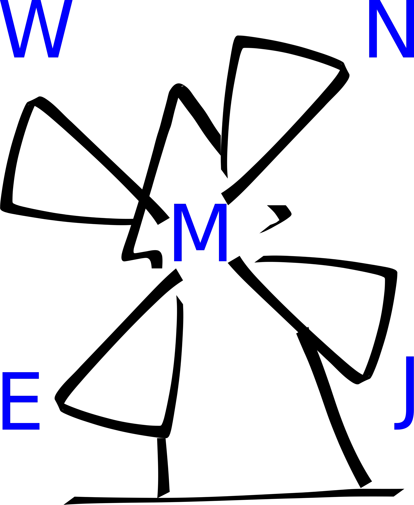
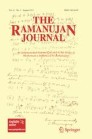
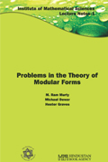
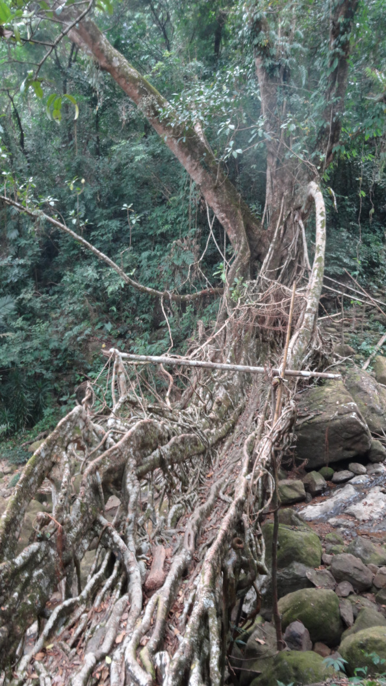
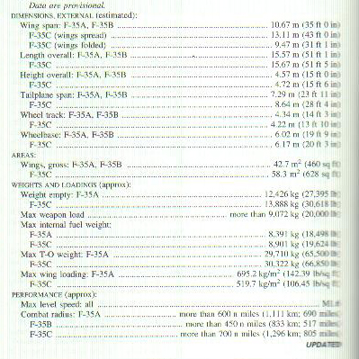

- Navigation
- Retour au début
- Comités éditoriaux
- Liens pour le grand public
- Some Emacs Utilities
- Scripts pour GP
- Fichiers de données
Informations Générales
CNRS / Institut de Mathématiques de Marseille
Aix Marseille Université, U.M.R. 7373
Campus de Luminy, Case 907
13288 MARSEILLE Cedex 9, France
Bureau 203 au deuxième étage
E-mail: olivier.ramare@REMOVE_THISuniv-amu.OHOHfr
... où il faut ôter REMOVE_THIS et OHOH pour m'écrire !
... where one should remove REMOVE_THIS and OHOH to get my address
Aix Marseille Université, U.M.R. 7373
Campus de Luminy, Case 907
13288 MARSEILLE Cedex 9, France
| Tél: (33-3) 04 91 26 95 79 | A short CV |
Bureau 203 au deuxième étage
E-mail: olivier.ramare@REMOVE_THISuniv-amu.OHOHfr
... où il faut ôter REMOVE_THIS et OHOH pour m'écrire !
... where one should remove REMOVE_THIS and OHOH to get my address
|
Membre des comités éditoriaux
des revues suivantes : |
|  |
The North-Western European Journal of Mathematics
An academic and non-profit journal from Lille with an international editorial committee |

|
Notes on Number
Theory and Discrete Mathematics
An academic and non-profit journal from the publishing house of the Bulgarian Academy of Sciences with an international editorial committee |
|  |
The Ramanujan Journal
An International Journal Devoted to the Areas of Mathematics Influenced by Ramanujan |
|  |
IMSc Lecture
Notes Series
An academic lecture notes series from IMSc Chennai with an international editorial committee, distributed in India by Hindustan Book Agency and otherwise by the American Mathematical Society. |
|
Le manifeste de cette revue pédagogique, éducative et
sociale.
«Nous pensons qu'il y a un lien intime et nécessaire entre pédagogie et lutte sociale et que les réflexions, les luttes et les pédagogies se partagent » |
You may donate directly your reviewer's royalties to the EMS CDC

- Images des mathématiques. À ne pas rater !
- Arte: Voyages au pays des maths. Des vidéos proposées par Arte, dix minutes sur une question.
- Zoom sur les métiers des mathématiques
- et, payant mais peu cher, Où en sont les mathématiques ?
- Komal, des exercices et des concours pour élèves et lycéens.
- Présentation en Bandes dessinées scientifiques de sujets scientifiques ! Rapides, précis et visuelles, un régal !
- Le film "Dimensions" de Jos Leys, Étienne Ghys et Aurélien Alvarez. Il s'agit d'une promenade mathématique... Ce film constitué de neuf chapitres pour une durée de deux heures est tout public et permet de découvrir progressivement la quatrième dimension ainsi que les nombres complexes et la notion de fibration.
- Le site "The Prime Pages" de Chris Caldwell contient beaucoup de références et d'informations correctes. En particulier, le lecteur y découvrira le polynôme de J.P. Jones, D. Sato, H. Wada et D. Wiens : il s'agit d'un polynôme de degré total 25 en 26 variables, à coefficients entiers, et dont l'ensemble des valeurs positives, prises lorsque les variables décrivent les entiers positifs, exactement l'ensemble des nombres premiers.
- Le calcul à baguettes en Chine ancienne.
- La faq latex francophone.
| Programmes pour Emacs : |
- Gp-script-mode / gp-mode.
- Anciens modes ou anciennes versions : là
- Support of tags in html-mode. Demande sli-tools.el 0.97 au moins. Utiliser f8 et C-cC-e pour voir ce que cela donne.
|  | Fichiers de données : |
-
Fichier texte contenant le maximum de $|L(1,\chi)|-(\log q)/2$ pour
tous les conducteurs $q \le 4000$.
Text file listing the maximum of $|L(1,\chi)|-(\log q)/2$ for all conductors q <= 4000. - Fichier texte contenant le maximum de $4\Bigl( \Bigl|\bigl(1-\frac{\chi(2)}{2}\bigr)L(1,\chi)\Bigr|-(\log q)/4 \Bigr)$ pour tous les caractères pairs de conducteurs impairs $\le 2000$.
- Fichier texte contenant le maximum de $3\Bigl( \Bigl|\bigl(1-\frac{\chi(3)}{3}\bigr)L(1,\chi)\Bigr|-(\log q)/3 \Bigr)$ pour tous les caracteres pairs de conducteurs non divisibles par 3 et $\le 2000$.
| Scripts GP : |
- [1]
L'article "Explicit estimates on several summatory functions involving
the Moebius function" nécessite quelques scripts qui sont accessibles ici :
- [1-1] CompIntM.gp: this script computes the integral of $\max(0,M(x))$ for $x$ between 1 and a given bound, where $M(x)$ is the summatory function of the Moebius function.
- [1-2] AsymptoticBoundsFor_m.gp: this script checks bounds like $|\sum_{n\le x}\mu(n)/n | \le 1/\log(x)$ for $x$ in some finite range. The RHS can be modified at will.
- [1-3] AsymptoticBoundsFor_checkm.gp: this script checks bounds like $|\sum_{n\le x}\mu(n)\log(x/n)/n | \le 1/\log(x)$ for $x$ in some finite range. The RHS can be modified at will.
- [1-4] AsymptoticBoundsFor_checkcheckm.gp: this script checks bounds like $|\sum_{n\le x}\mu(n)\log^2(x/n)/n | \le 1/\log(x)$ for $x$ in some finite range. The RHS can be modified at will.
- [1-5] AsymptoticBoundsFor_M.gp: this script checks bounds like $|\sum_{n\le x}\mu(n) | \le x/\log(x)$ for $x$ in some finite range. The RHS can be modified at will.
- [1-6] AsymptoticBoundsFor_mstar.gp: this script checks bounds like $|m^*(x)| \le 1/\log(x)$ for $x$ in some finite range, where the function $m^*(x)$ is defined in equation (7.1). The RHS can be modified at will.
- [1-7] AsymptoticBoundsFor_checkmstar.gp: this script checks bounds like $|\check{m}^*(x)| \le 1/\log(x)$ for $x$ in some finite range, where the function $\check{m}^*(x)$ is defined in equation (10.1). The RHS can be modified at will.
- [1-8] AsymptoticBoundsFor_checkcheckmstar.gp: this script checks bounds like $|\check{\check{m}}^*(x)| \le 1/\log(x)$ for $x$ in some finite range, where the function $\check{\check{m}}^*(x)$ is defined in equation (13.1). The RHS can be modified at will.
- [1-9] AsymptoticBoundsFor_Mstar.gp: this script checks bounds like $|M^*(x)| \le x/\log(x)$ for $x$ in some finite range, where the function $M^*(x)$ is defined in equation (16.5). The RHS can be modified at will.
Page d'accueil du laboratoire